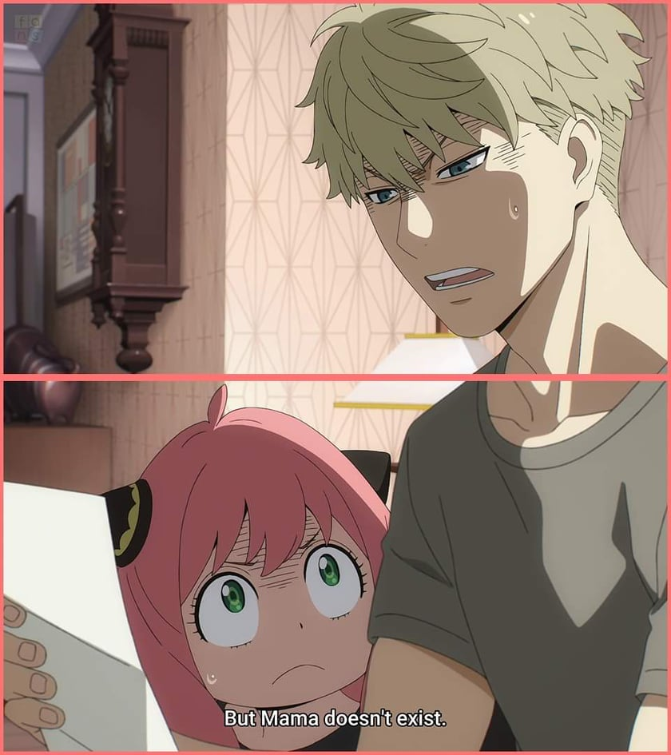

Hi! I'm Nathaniel Morva, a web developer. Throughout my student life (I'm still a student), I've been writing either novels or short stories as a hobby. Whenever I wanted to share something going on in my life, I write a blog, I used to have an account in a blogging website. I deleted that blog a long time ago because I prefer leaving that past behind. In this blogging website, coded by me, and partnered with Faith, I'd like to write reviews about shows, they could be: Anime, K-drama, and Movies. I've seen hundreds of shows and that have made me have a high standard when it comes to watching shows. I'll tackle about the flaws, and if the lesson is relevant and worth watching.

Hi! I am Faith de Guzman, a HUMSS student. Ever since I was a child, I have always been a literature enthusiast. Whenever given a chance to enjoy leisure, I always choose to open up a book and let myself dive into a whole new world that is far from the awful reality rather than use my mobile phone. I am also deeply in love with writing. That is the reason why I joined our campus journalism club and eventually became a News Writer and Copyreader who published numerous articles for our school gazette. Furthermore, I tried composing some novels, writing in my journal, and now creating this blogging website with my good partner Nathaniel. In this website, we will share some thoughts, realizations, reviews, and everything in between. We hope that you would support this and join our "train of thoughts" as we progress and develop our authorial prowess more.
April 12, 2022 by Nathaniel Morva

Am I seeing this, right?
No way.. It only has been a few years since I've read the manga of this.
There's no way I remember what happened here, but the context, I still know 😎.
Man, Anya is so adorable. The way the shape of her head, her eyes, her hair color, and fashion - drawn
is just so unique!
I honestly don't know when I'll be able to stream this.. I've been so busy with self-studying and I
still have a few episodes left to finish Attack On Titan.
See this for yourself,
it's good!
"In the Eyes of a Child: Innocence and Endless Possibilities
What were you like as a child? What do you love to do?"
April 9, 2022 by Faith De Guzman
Greetings to you, dear reader. I hope you are having a good day so far. Before anything else, I would
like to welcome you to this website. My co-chronicler Nathan and I hope you would enjoy your stay here.
Happy reading!
Anyway, one of the very few people I have been following online is Miss Aileen Xu. She is a lifestyle
creator and has a YouTube channel Lavendaire and Instagram account lavendaire where she
shares tips
and advice for healing, and the betterment of oneself. She also shares a lot of journal prompts monthly
online for people to answer and be able to dig deeper and assess themselves regarding their mental
health, and more aspects of their life.
One of the good prompts I happened to stumble upon on her Instagram account is the question we will be
answering in this entry. The question that piqued our attention is this: What were you like as a child?
What do you love to do?
Ever since I was a child, I am a dreamer who dreams big dreams. The child Faith always wants to do
more.
The child Faith always wants to prove to people that she can do different awesome things. She was always
dreaming with her eyes wide open. And, if you ask her what she's dreaming now, she would answer that she
wants to be a lawyer, an artist, a detective, a journalist, an author, a performer, and everything she
could be just to make her loved ones so proud of her.
As her older self, I hope and promise to make her happy one day. I promise to make the younger Faith
happy by making all her dreams—no matter how twisted or impossible it may seem—come true. I will give my
younger self the happiness she deserves. I will make her proud someday.
I guess you could see that my younger self used to have her head up in the clouds. This must be the
effect of sticking your nose in books rather than playing with your playmates sometimes. I became so
imaginative HAHAHAHA. How about you? What were you like as a child? Were you like me? A dreamer?
See you in the next entry. Be safe, everyone!
q.e.d.